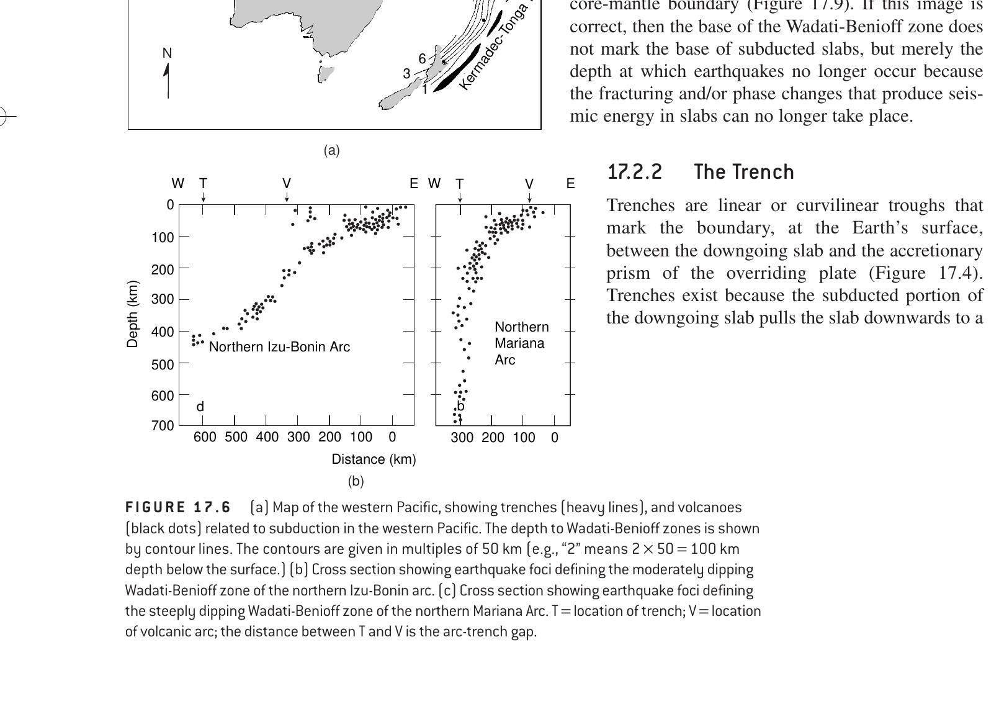

Seismotectonic Mechanism: Named after seismologists Kiyoo Wadati and Hugo Benioff, the Wadati-Benioff zone is a dipping planar zone of seismicity tracing the trajectory of cold, dense oceanic lithosphere subducting into the warm mantle asthenosphere.
Focal Depth Distribution: Because ordinary mantle at depths > 50–70 km is too hot and ductile for brittle frictional sliding, earthquakes can only occur where cold, rigid rock is transported downwards. The subducting slab remains cold and brittle down to 670–700 km (the upper mantle transition zone), enabling deep-focus earthquakes (300–670 km) via dehydration embrittlement and transformational faulting (metastable olivine ⟶ spinel/ringwoodite phase changes). Subduction zones are the ONLY tectonic environments on Earth where deep-focus earthquakes occur!
Mid-ocean ridges are divergent plate boundaries characterized by high heat flow and thin, newly formed lithosphere. Brittle failure is strictly limited to the uppermost 10–15 km (shallow-focus earthquakes only) along extensional rift grabens.
Continental rifts (e.g., East African Rift, Baikal Rift) involve crustal thinning and elevated geothermal gradients. Earthquakes are restricted to the brittle upper crust at depths < 20–30 km (shallow-focus).
Transform faults (e.g., San Andreas Fault, Alpine Fault, oceanic fracture zones) represent strike-slip motion between plates. Frictional locking and rupture occur exclusively in the upper seismogenic crust, rarely exceeding 15–20 km depth.
| Classification | Focal Depth (h) | Typical Tectonic Environments | Dominant Rupture Mechanism |
|---|---|---|---|
| Shallow-Focus | 0 – 70 km | Mid-ocean ridges, continental rifts, transform faults, collision zones, subduction trenches | Classic brittle frictional sliding & cataclasis (Byerlee's Law) |
| Intermediate-Focus | 70 – 300 km | Subduction zones exclusively (Wadati-Benioff zone) | Dehydration embrittlement of serpentinite/hydrous minerals |
| Deep-Focus | 300 – 670 km | Wadati-Benioff zones exclusively (Subduction slabs) | Transformational faulting (metastable olivine ➔ spinel/wadsleyite transition) |